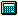
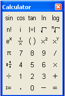

Calculator Toolbar |
You can use calculator operators and functions to evaluate expressions numerically or analytically. Click on the  button in the Math toolbar to bring up the Calculator toolbar or choose Toolbars > Calculator from the View menu.

| Calculator Operators |
Buttons on the Calculator toolbar insert some of the basic trig functions and common operators. You can also type any operator using its keystroke and any function by typing the function name (for example, sin).
| Tooltips |
To learn what a button does, move the mouse over the button until a tooltip shows the title and a description appears on the message line of the Status Bar.
Note that the tooltips are only documented for US keyboards. The Mathcad Keyboard Shortcuts page may show the shortcuts for your language keyboard.